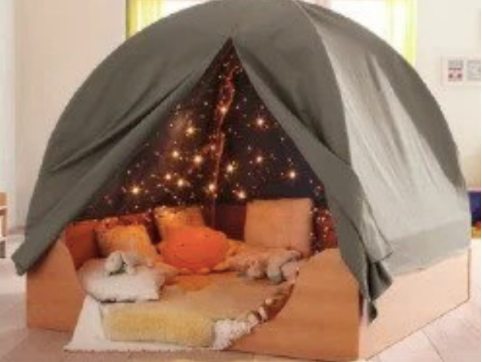

В 2020 году был приобретен сенсорно-динамический зал «ДОМ СОВЫ». Сотрудник центра Балам-ай прошел обучение по использованию оборудования. Это безопасное игровое пространство в виде зала со специально разработанными развивающими тренажерами и балансерами. Наши психологи проводят занятия с детьми по методике Совопрактика. На занятиях в «ДОМЕ СОВЫ» ваш ребенок становится героем сказки-квеста и учится новым способам быстро принимать самостоятельные решения. Ребенок изучает и улучшает возможности своего тела, развивает физическую силу, пластику движений, ловкость. Задача на баланс и координацию движений активирует работу левого и правого полушария ребенка. Таким образом совопрактика развивает и тело, и мозг.
(сенсорно-динамический зал)
В 2020 году был приобретен «Tomatis». В центрах Балам-ай дети будут проходить курс занятий «Tomatis» бесплатно. Наш специалист Асия Жексимбаева прошла платное обучение и получила сертификат для использования «Tomatis». То есть дети будут получать бесплатные услуги у официально лицензированного специалиста, метод «Tomatis» предлагает одну из самых инновационных и современных программ нейросенсорной стимуляции для улучшения моторики, а также эмоциональных и когнитивных способностей. Специалист особое внимание уделяет детям с нарушением аутистического спектра и ассоциируемых с ним типов поведения, с синдромом Аспергера, нарушениями сенсорного восприятия и с синдромом Дауна.
(Сертификат)
(Tomatis)
В 2021 году при помощи АО КБ “Citi” банка была оборудована “Сенсорная комната” по адресу проспект Сарыарка 48/2. Сенсорная комната психологической разгрузки предназначена для релаксации, наполнения энергией, обучения, развития и стала отличным оборудованием для пробуждения чувств действий и экспериментов. В зависимости от методологии, может применяться для стимуляции и развития детей, в том числе для детей с аутизмом.

(Сенсорная команта)
В 2022 году в рамках проекта институционального развития при поддержке Фонда Евразии (Eurasia Foundation, Inc, USA) -- некоммерческая международная организация по развитию, была приобретена "Пещера сокровищ". Пещера сокровищ предназначена для релаксации и психоэмоциональной разгрузки. Волшебная пещера стала уютным местом для веселых игр для наших бенефициаров. В неё свободно поместятся 3-4 ребенка одновременно. Пещера сокровищ состоит из: мерцающих огней под куполом, создавая уютную атмосферу, позволяя детям уединиться, расслабиться и помечтать. Каркас пещеры выполнен из дерева, купол — из высококачественной ткани. Под куполом расположены безопасные лампочки-огоньки.
(Пещера Сокровищ)